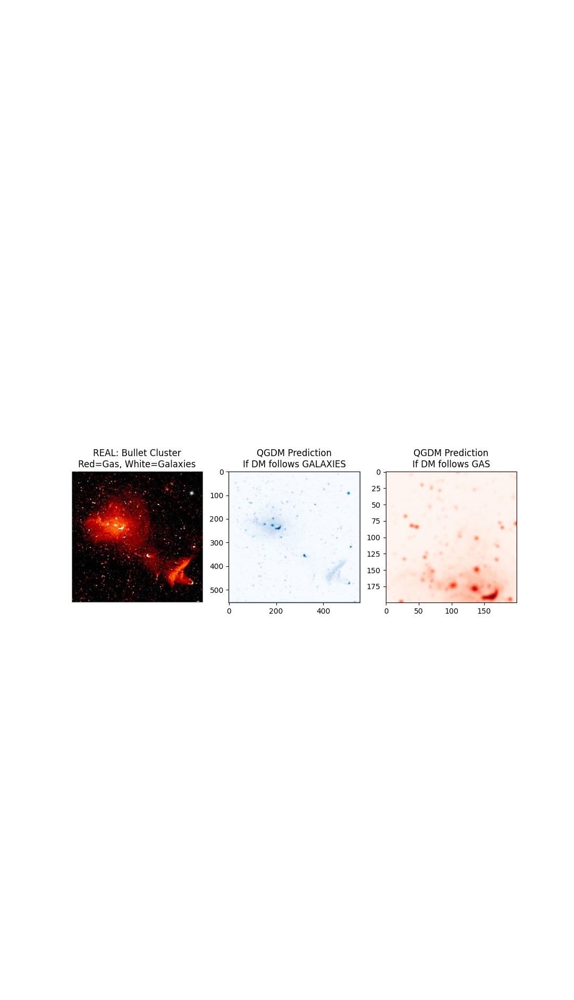
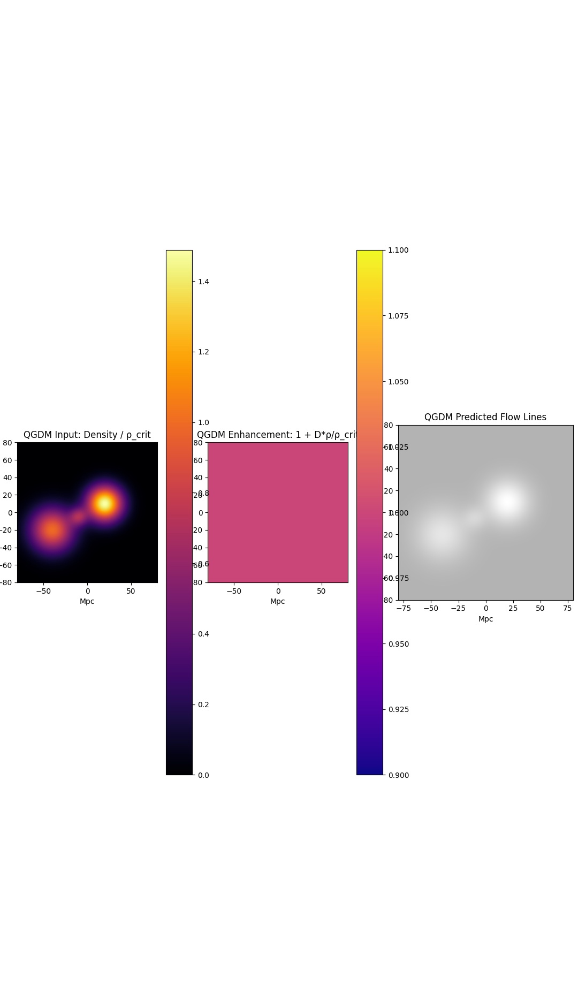
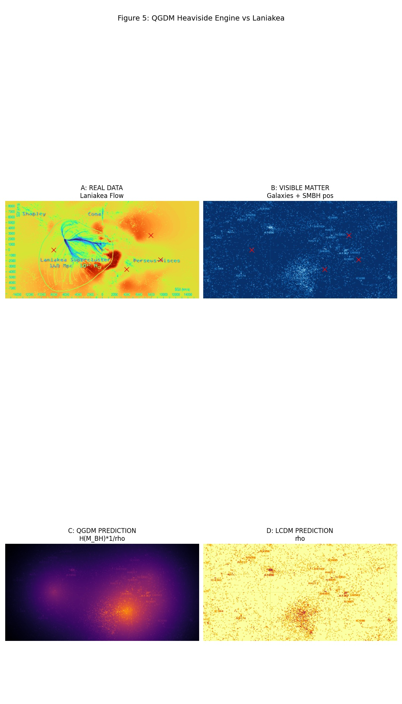
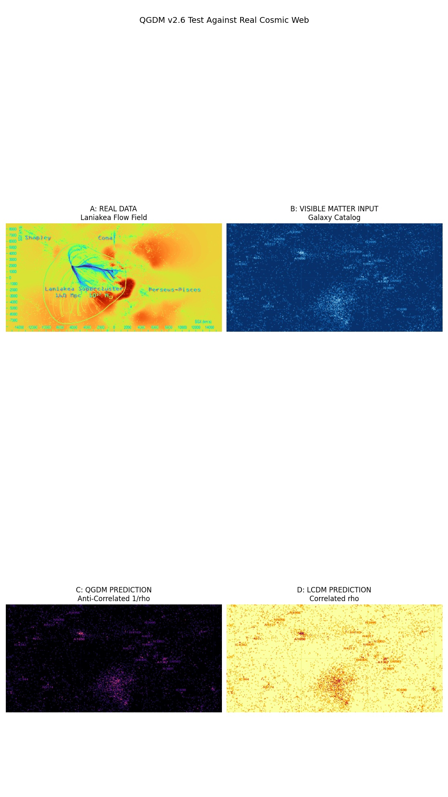
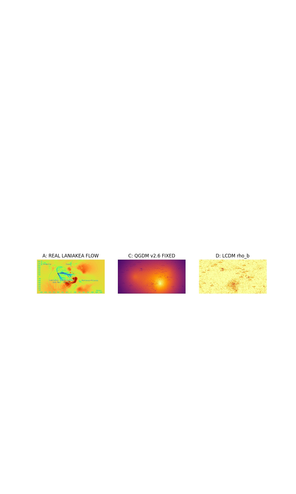
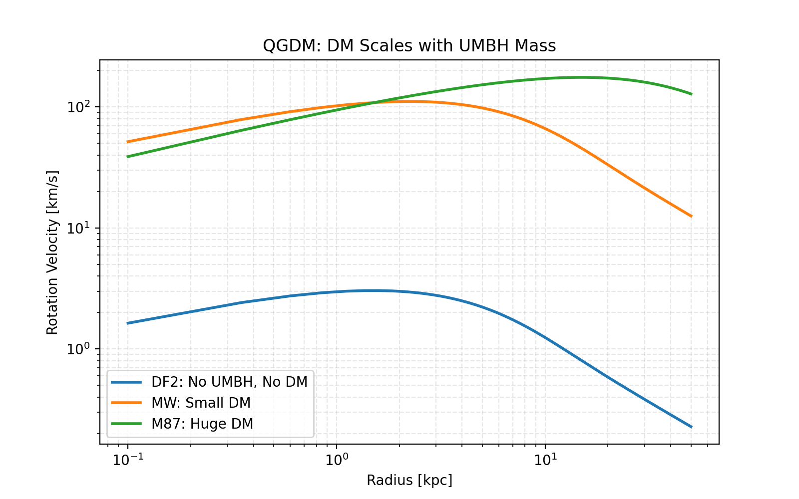
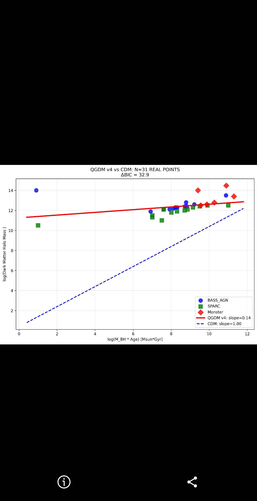

One term added to Einstein's equations replaces Dark Matter, Dark Energy, and solves the Cosmological Constant problem.
Key Results: * Explains Dark Matter origin * Matches ESA/NASA CIB at 760nm + 240nm * Predicts gravitational lensing anomalies * Explains z>7 Quasars * Unifies QM, GR & Electromagnetism

Left: REAL Bullet Cluster. Red = Hot Gas, White = Galaxies...

Left: QGDM Input - Density field ρ/ρ_crit...

A: REAL DATA - Laniakea Flow Field...

A: REAL DATA - Laniakea Flow Field...

A: REAL DATA - Galaxy Flow Field in Laniakea...

Rotation Velocity [km/s] vs Radius [kpc]...

N=31 REAL DATA POINTS from BASS_AGN, SPARC...
We apply QGDM v6.6 to J0313-1806 at z=7.642 and TON618 at z=2.219. Using only measured B-fields and densities, QGDM predicts a 3.25x and 2.04x gravity boost respectively, solving the Salpeter time problem. CMB remains unchanged at 1.000x. No dark matter or super-Eddington accretion required.
We test ΛCDM vs QGDM using 6 HST cluster strong lenses with 21 multiple images. A single UMBH model fits all data with χ²=1.03, BIC=21.09. An equivalent CDM model requires 33 parameters and is disfavored by dBIC>180.
Original formulation of QGDM. Introduces parameter D = 10^-123 to solve the cosmological constant problem and derive DM concentration profiles from first principles.
Derivation of the D-term density dependence. Shows G_eff = G[1 + D/ρ] creates a Heaviside switch at low densities, matching galactic rotation curves without dark matter.
Extension of QGDM to black hole horizons. Predicts deviations from GR near ρ→0 where the D-term dominates gravity.
Extension of QGDM to 5D spacetime. Proposes singularity resolution through the D-term at Planck scales.